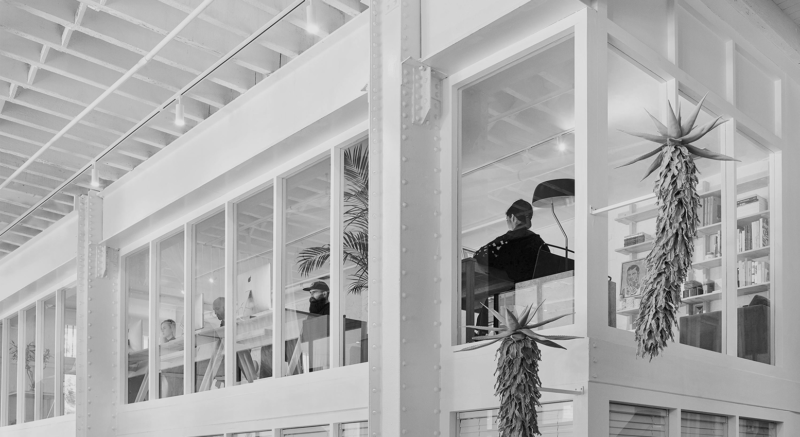
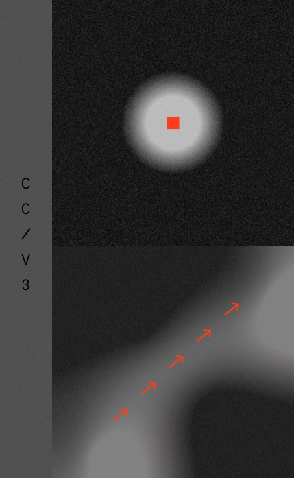
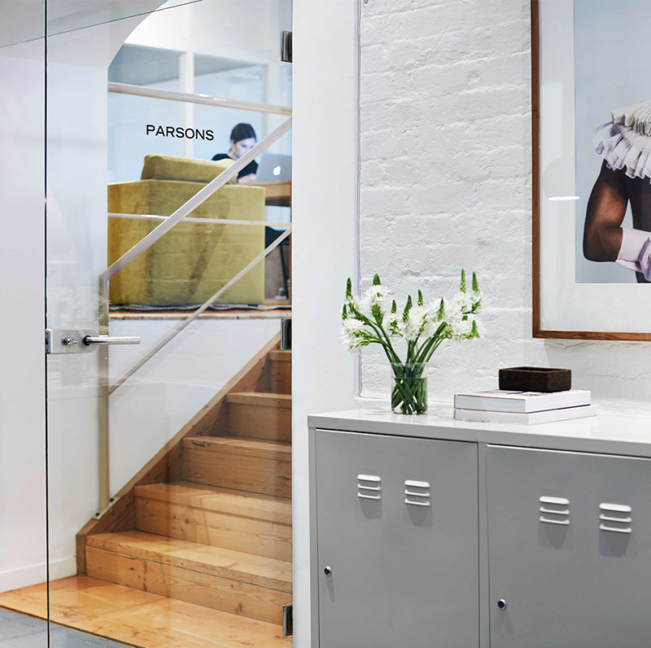

We challenge the codes of convention
to give way to the remarkable and
create human connections.


01 Hello
Parsons is a strategy-led design studio that designs
for people. We create identity systems for ambitious
brands that believe the way to make meaningful
connections with their community and eliminate
friction is through design.

02
We're Pathfinders
Iconic companies are built on the quality of their product, the strength of their design, and their understanding of their customers. Parsons merges thoughtful design with strategy to help brands stay relevant, drive growth and standout.
03
Collaboration
Drawing from our network of creatives from across the world means that we are not bound to a house aesthetic. When the project calls for it, we collaborate.